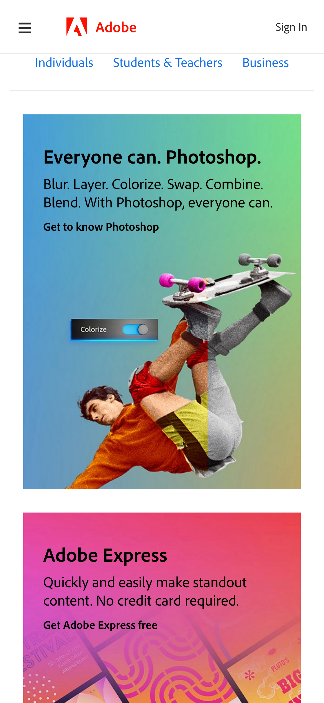
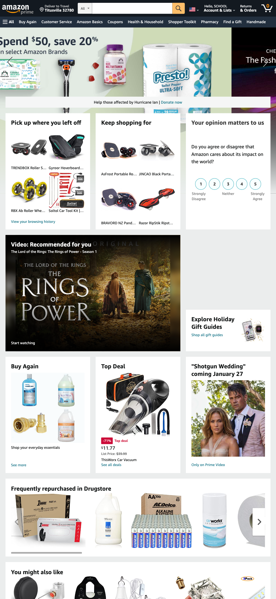

Rules of Thirds
BMW-USA
This site is a example of the rule of thirds. This composition is a guideline that breaks an image down into thirds (both horizontally and vertically) so you have nine pieces. The human eye gravitates toward points right beyond the center of a photo. These points are called the intersecting points on a Rule of Thirds grid. As people read text from left to right, they also read images in the same direction. As a result, the bottom right portion of an image is the most visually arresting. In contrast, the upper left part is most likely to be overlooked.
PARC: Repetition
Adobe
This site is a example of repetition. Repetition is a design principle that uses the same fonts, layouts, and colors to make elements more noticable. It is used multiple times throughout this website, which provides consistency and ease of navigation.
PARC: Proximity
Amazon
Proximity. Proximity refers to the closeness of elements in a page. Different elements in webpages can be grouped together to create a bigger association. Apart from being similar, the closeness of these elements with each other than other page elements will automatically be paired in the viewer's mind